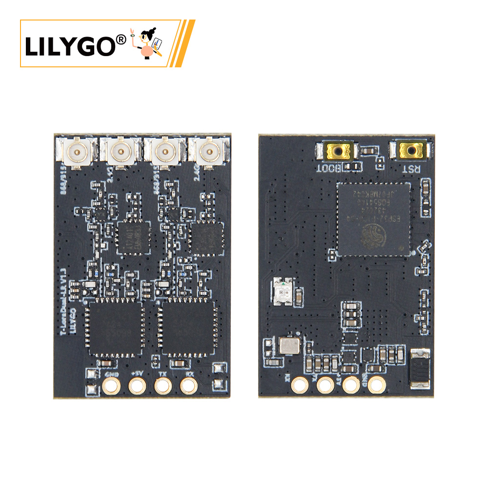

中文 简体
中文 简体LILYGO T-Lora-Dual

版本迭代:
| Version | Update date | Update description |
|---|---|---|
| T-ELRS_V1.0 | 2025-03-15 | 初始版本，支持 ExpressLRS 协议 |
| T-ELRS_V1.1 | 2025-06-20 | 优化 SPI 时序，增加稳定性 |
购买链接
| Product | MCU | 无线模块 | 频段支持 | Link |
|---|---|---|---|---|
| T-ELRS | ESP32-PICO-D4 | LR1121 ×2 | Sub-GHz + 1.9GHz + 2.4GHz | LILYGO Mall |
目录
项目概述

T-Lora-Dual 是一款基于 ESP32-PICO-D4 微控制器的双频无线通信模块，集成了两个 LR1121 多频段无线芯片，专为 ExpressLRS 飞控协议设计。该模块支持 Sub-GHz/1.9GHz/2.4GHz 多频段通信，适用于遥控器高频头、无人机数据链路、物联网远距离通信等场景。
硬件配置

| 模块 | 型号 | 主要特性 |
|---|---|---|
| 主控 MCU | ESP32-PICO-D4 | 双核处理器，240MHz，支持 Wi-Fi/蓝牙，34个 GPIO |
| 无线模块 | LR1121 ×2 | Sub-GHz + 1.9GHz/2.4GHz 双频段，支持 LoRa®/FSK 调制 |
| 状态指示 | LED | GPIO5 控制，用于工作状态指示 |
| 射频开关 | AT2401 | 控制天线切换，支持双路发射/接收 |
引脚分配

LR1121-1 模块
| 信号 | ESP32 引脚 | 说明 |
|---|---|---|
| MISO | 33 | SPI 数据输入 |
| MOSI | 32 | SPI 数据输出 |
| SCK | 25 | SPI 时钟 |
| CS | 27 | 芯片选择 |
| DIO9 | 37 | 中断信号 |
| RST | 26 | 模块复位 |
| BUSY | 36 | 模块状态输出 |
LR1121-2 模块
| 信号 | ESP32 引脚 | 说明 |
|---|---|---|
| MISO | 33 | SPI 数据输入（共享） |
| MOSI | 32 | SPI 数据输出（共享） |
| SCK | 25 | SPI 时钟（共享） |
| CS | 13 | 芯片选择 |
| DIO9 | 34 | 中断信号 |
| RST | 21 | 模块复位 |
| BUSY | 39 | 模块状态输出 |
AT2401 射频开关
| 信号 | ESP32 引脚 | 功能 |
|---|---|---|
| TX1 | 14 | 发射通道1控制 |
| TX2 | 15 | 发射通道2控制 |
| RX1 | 10 | 接收通道1控制 |
| RX2 | 9 | 接收通道2控制 |
状态指示
| 信号 | ESP32 引脚 | 功能 |
|---|---|---|
| LED | 5 | 状态指示灯 |
功能说明
- 双模块架构：两个 LR1121 模块共享 SPI 总线（SCK/MOSI/MISO），独立 CS 信号实现双频段并发通信。
- 硬件隔离：每个模块拥有独立的 RESET、BUSY、DIO9 引脚，确保通信过程互不干扰。
- 状态监控：DIO9 用于接收模块中断，BUSY 实时反馈模块工作状态。
- 射频切换：AT2401 控制天线切换，支持双路发射/接收模式切换。
文件目录
├── ExpressLRS/ # ExpressLRS相关代码目录
│ └── src/ # 源代码目录
│ ├── user_defines # ExpressLRS配置
│ ├── hardware/ # 硬件目录
│ │ ├── RX/ # ExpressLRS 接收机硬件IO对应文件(T-ELRS LR1121 True Diversity.json)
│ │ ├── TX/ # ExpressLRS 发射机硬件IO对应文件
│ │ └── targets.json # ExpressLRS 选择硬件IO编译目标文件(编译选择 1.BAYCKRC 900/2400 Dual Band Gemini RX)
│ └── lib/ # ExpressLRS 依赖库
├── T-ELRS/ # T-ELRS相关代码目录
│ ├── src/ # 源代码目录
│ ├── examples/ # 示例代码
│ ├── firmware/ # 固件目录
│ └── hardware/ # 硬件原理图
└── README.md # 英文项目说明文件
└── README_CN.md # 中文项目说明文件
若需深入了解，请查看ExpressLRS 官网
烧录指南
- 烧录前确保ESP32进入下载模式（需要持续按住BOOT按钮，再按RESET再松开RESET）
- 使用ESP Flash Download Tool（Windows）
- 检查串口驱动是否正常安装
- 如遇烧录失败，尝试降低波特率或更换USB线缆
- 烧录完成后按RESET按钮重启设备
编译指南
ExpressLRS编译(只能Platfromio编译)
- 用vscode打开ExpressLRS目录下的src子目录
- 先选择设备型号


- 再点击编译上传，第一次编译需下载文件，可能会有点慢

T-ELRS编译
Platfromio
- 用vscode打开T-ELRS目录,再打开platformio文件，取消注释要编译的例程

- 再点击编译上传
Arduino IDE
- 把T-ELR目录下的lib目录移动到Arduino项目依赖库目录下

- 用Arduino IDE打开examples目录下的例程
- 选择芯片型号，选择默认配置


- 点击编译上传